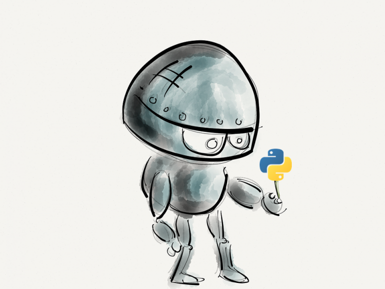

PYTHON
Python es un lenguaje de programación
Python es un lenguaje de programación interpretado cuya filosofía hace hincapié en la legibilidad de su código.
Se trata de un lenguaje de programación multiparadigma, ya que soporta orientación a objetos, programación imperativa y, en menor medida, programación funcional Es un lenguaje interpretado, dinámico y multiplataforma.
código abierto, orientado a objetos, muy simple y fácil de entender. Tiene una sintaxis sencilla que cuenta con una vasta biblioteca de herramientas, que hacen de Python un lenguaje de programación único.
Una de las ventajas principales de aprender Python es la posibilidad de crear un código con gran legibilidad, que ahorra tiempo y recursos, lo que facilita su comprensión e implementación.
Estos factores y otros que veremos más adelante, han hecho que Python se convierta en uno de los idiomas de programación más utilizados. Desde aplicaciones web hasta la inteligencia artificial, los usos de Python son infinitos.
Python en la Inteligencia Artificial (AI)
Python es un lenguaje de escritura rápido, escalable, robusta y de código abierto, ventajas que hacen de Python un aliado perfecto para la Inteligencia Artificial.
Permite plasmar ideas complejas con unas pocas líneas de código, lo que no es posible con otros lenguajes.
Existen bibliotecas como «Keras» y «TensorFlow”, que contienen mucha información sobre las funcionalidades del aprendizaje automático.


Python en Data Science
Desde la introducción de los motores numéricos de Python como ‘Pandas’ y ‘NumPy’, los investigadores han cambiado a Python desde el anterior lenguaje, MATLAB. Python se ocupa de los datos tabulares, matriciales y estadísticos, e incluso los visualiza con bibliotecas populares como «Matplotlib» y «Seaborn».
Python en Frameworks de Pruebas:
El testing es otra de as actividades que se ha cambiado a Python.
Python es ideal para validar ideas o productos, ya que tiene muchos frameworks integrados que ayudan a depurar el código y ofrecen flujos de trabajo y ejecución rápidos.
Herramientas de testing como ‘Unittest’, ‘Pytest’ y ‘Nose test’ hacen que las pruebas sean más fáciles. Python, además, admite pruebas entre plataformas y navegadores con diferentes marcos, como «PyTest» y «Robot».
El testing, que suele ser una de las tareas más arduas, se convierte en algo mucho más simple y rápido.
Python en Desarrollo Web:
El framework Django, proporcionado por Python, es una ventaja para todos los desarrolladores, ya que puede usarse para crear aplicaciones web dinámicas y muy seguras.
El lenguaje Python también se usa para hacer scraping, es decir, obtener información de otros sitios web. Aplicaciones como Instagram, Bit Bucket, Pinterest están construidas en frameworks de este tipo.
Los usos y aplicaciones de Python se encuentran mucho más allá de los campos mencionados, desde el desarrollo de juegos hasta la visualización de datos, desde la creación de redes hasta el desarrollo de software en general. Las aplicaciones de Python son numerosas.
Si eres desarrollador o quieres dedicarte a uno de los campos de los que hemos hablado en este post, Python es uno de los lenguajes que debes aprender y dominar para trabajaren los proyectos tecnológicos más punteros.